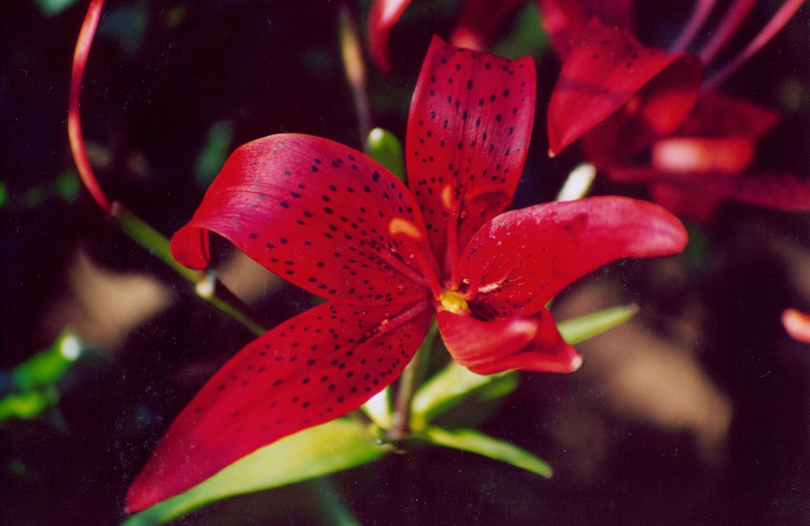

ゆり

北半球のアジアを中心にヨーロッパ、北アメリカなどの亜熱帯から温帯、亜寒帯にかけて広く分布しており、
原種は100種以上、品種は約130品種（アジア71種、北アメリカ37種、ヨーロッパ12種、ユーラシア大陸10種）を数える。
日本には15種があり7種は日本特産種である[1]。 山岳地帯を含む森林や草原に自生することが多いが、数種は湿地に自生する。
L. arboricolaは唯一の着生植物である。 一般的に、石灰質でない弱酸性の土壌を好む。日本の園芸では秋植えの球根草として扱われる。
代表的な種に、ヤマユリ、オニユリ、カノコユリ、ササユリ、テッポウユリ、オトメユリなどがある。
(引用:wikipedia url: https://ja.wikipedia.org/wiki/%E3%83%A6%E3%83%AA)